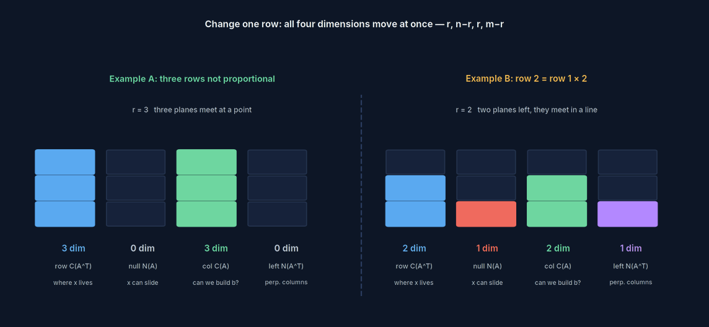

Matrices & Transformations
A matrix isn't a table of numbers. It's a single transformation of space. Watch what it does to the unit cube and you know everything about it.
The last section ended with the same question having a plane, a line, or exactly two points for an answer, depending on how many conditions you were given.
Those "dimensions" grow their own geometric shape here.
First, know what it actually is
A matrix isn't a vector and isn't a pile of loose numbers. It's a stack of column vectors.

The whole loaf is the matrix $A$. Slice it once, vertically, and you get one slice — that's a column vector. The space those slices can span is the column space, and the number of genuinely different slices is the rank — if two slices are identical, they only count once.
One thread: spanning and collapsing
Now the shape is settled, look at the operation. Multiplying a vector $\mathbf x$ by a matrix $A$ is easiest to read as a row-by-row calculation. Read it a different way and everything clicks: read it down the columns.
$\mathbf x$ isn't something being "acted on" — it's a recipe: how many parts of each of $A$'s columns to take, laid end to end.
That one sentence pulls everything else along with it:
Whatever the columns span, that's where you can go
Every weighted combination of the three columns makes up the column space. $A\mathbf x=\mathbf b$ has a solution exactly when $\mathbf b$ lies in the column space — anywhere out of reach, and no recipe will ever get you there.
How much room the columns span, that's the rank
If three columns span the full three dimensions, $\det\ne0$ and every $\mathbf b$ gets exactly one recipe. If the third column happens to lie in the plane the first two already span, it's redundant — rank drops to 2 and the column space collapses onto a plane.
Whatever got flattened, that's the null space
A rank shortfall means there's some nonzero $\mathbf x$ with $A\mathbf x=\mathbf 0$: a genuinely nonempty recipe that comes out to the origin anyway. All such $\mathbf x$ form the null space — exactly the dimension that got squashed flat.
dimension spanned + dimension flattened = the dimension you started with, none of it goes missing
Five demos you can drag
Taken in order, the five below are exactly this thread: from "what is $A\mathbf x$ actually computing" all the way to the four subspaces. Every one rotates and lets you edit the matrix entries.
Four ideas
Column Space
- What it is
- Every linear combination of $A$'s columns, written $C(A)$.
- What it measures
- Everywhere this machine can reach. $A\mathbf x=\mathbf b$ has a solution $\iff\mathbf b\in C(A)$.
- Where it sits
- Its dimension is exactly the rank. For a $3\times3$ matrix, the column space is all of three-space (full rank), a plane (rank 2), a line (rank 1), or just the origin (the zero matrix).
- Collapse means
- Some $\mathbf b$'s are permanently out of reach — the equation has no solution, not because you made a mistake, but because it was never in range.
Null Space
- What it is
- Every $\mathbf x$ satisfying $A\mathbf x=\mathbf 0$, written $N(A)$.
- What it measures
- The directions $A$ crushes to nothing. It always contains the origin, since $A\mathbf 0=\mathbf 0$ is automatic.
- Where it sits
- The general solution to $A\mathbf x=\mathbf b$ = any one particular solution + the whole null space. The bigger the null space, the less unique the solution. That "$k$" in "the answer is $k(3,-1,1)$" from the previous page — that's the null space's one degree of freedom.
- Just the origin means
- Nothing got flattened, $A$ is invertible, every $\mathbf b$ corresponds to exactly one $\mathbf x$.
Rank
- What it is
- The dimension of the column space. It equals the dimension of the row space too — those two numbers are always the same.
- What it measures
- How much genuinely independent information a matrix actually holds. Rows and columns are the same information sliced two ways, so counting from either side gives the same number.
- Where it sits
- $\text{rank}+\text{nullity}=n$. What's spanned plus what's flattened equals the dimension you started with. In Gaussian elimination, "the number of nonzero rows" is exactly what it's counting.
- A shortfall means
- $\det=0$, non-invertible, columns linearly dependent, nontrivial null space — four ways of saying the same thing.
$A^{\mathsf T}A$, the Gram Matrix
- What it is
- $A$ transposed, times $A$ — always square, always symmetric, always positive semidefinite.
- What it measures
- It pulls out length information: $\mathbf x^{\mathsf T}A^{\mathsf T}A\mathbf x=\lVert A\mathbf x\rVert^2$. Want to know how long $A\mathbf x$ is? You never actually have to compute $A\mathbf x$ itself.
- Where it sits
- Least squares wants to minimise $\lVert A\mathbf x-\mathbf b\rVert^2$; taking the derivative gives the normal equation $A^{\mathsf T}A\mathbf x=A^{\mathsf T}\mathbf b$. The next section is built entirely on this equation.
- Non-invertible means
- $A$'s columns are linearly dependent, and the least-squares solution isn't unique — there's redundancy among the independent variables in your data.
Four subspaces, one number
Line up the four subspaces of an equation system, and they turn out not to be four separate facts — all four dimensions are decided by the single number, rank $r$: $r,\ n-r,\ r,\ m-r$.

The left example has three mutually non-proportional rows, full rank, both null spaces just the origin. The right example changes exactly one thing — row 2 becomes twice row 1 — and rank drops to 2: the row space and column space each lose a dimension, and both null spaces gain one back. The total never changes.
$\mathbb{R}^n=C(A^{\mathsf T})\oplus N(A)$ $\mathbb{R}^m=C(A)\oplus N(A^{\mathsf T})$
The space you start from splits in two: one half is where solutions come from, one half is the direction they're free to slide in.
The space you arrive in also splits in two: one half you can reach, one half you never can.
Linear dependence isn't a computational accident — it's independent directions running out.
Drop the rank by one and all four subspaces change shape at once.
Working through three actual planes makes this stick better than memorising the definition: two rows proportional with matching right-hand sides is the same plane twice; proportional but mismatched is two parallel planes that never meet; not proportional at all is where two planes genuinely cross.
Friendship code, please
请输入友情码
Hint: who said the line on the front page? His surname will do.
线索：首页那句话是谁说的？填他的姓。
Not quite — try again
Back to the actual builds
The servo calibration page fits a third-order polynomial by solving an overdetermined $A\mathbf x=\mathbf b$: 61 rows of equations, 4 unknown coefficients, $\mathbf b$ not in the column space, so it settles for the closest point instead — solving exactly $A^{\mathsf T}A\mathbf x=A^{\mathsf T}\mathbf b$.
The S-curve, on the other hand, has only 6 conditions and 6 coefficients, $\det=2\ne0$, full rank, null space just the origin — a unique solution. Same framework, two different endings, and the only difference is rank.